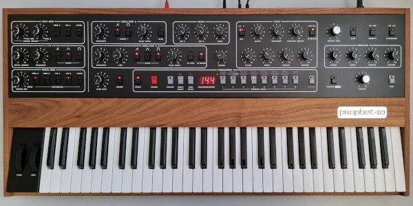

Fundada a l'any 1974 per Dave Smith (pare del MIDI) en Califòrnia.
En 1987 va ser adquirida per Yamaha.
El 1978, es va llançar al mercat un dels sintetitzadors mes reconeguts del moviment SynthPop: el Prophet-5.
Aquest model va ser utilitzat per músics com Ryuichi Sakamoto (Yellow Magic Orchestra), Depeche Mode, Tears For Fears [...].
